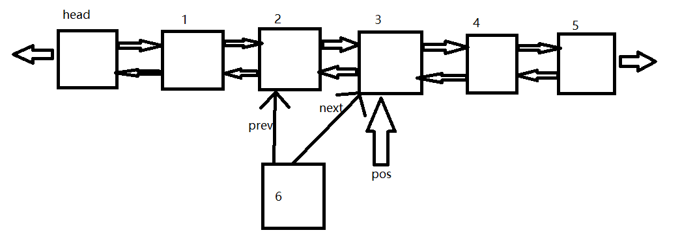
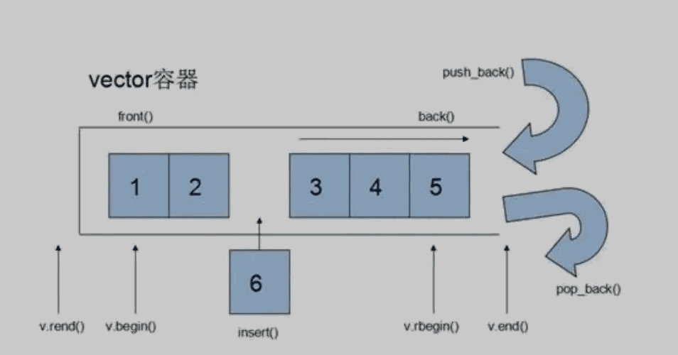
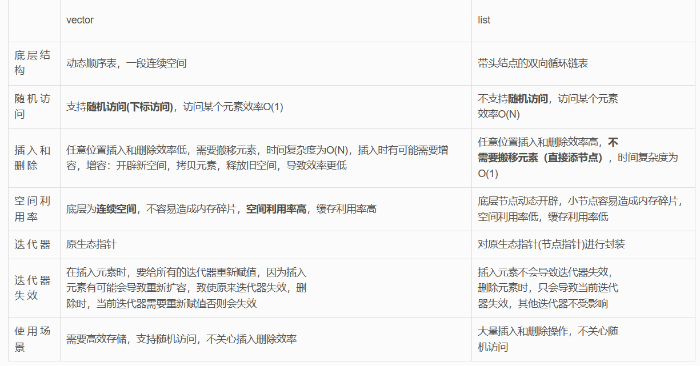
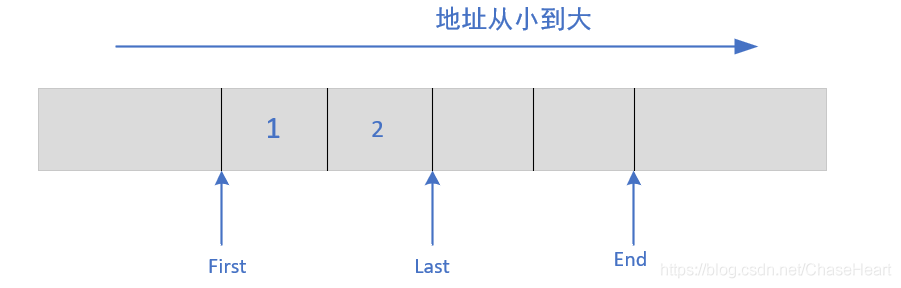
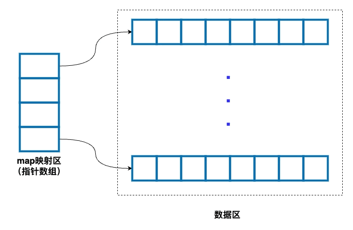

C++面试高频（六）之STL
1. vector list异同⭐⭐
List：
- List是一个双向链表的容器，每个元素都由一个节点表示，节点包含指向前一个节点和后一个节点的指针。
- 插入和删除元素的时间复杂度为O(1)，因为只需要改变节点的指针，而不需要移动其他元素。
- 由于节点间的指针关联，内存空间不是连续分配的，因此对于需要频繁的插入和删除操作的场景，list可以更高效。
- 在访问元素方面，由于不具备随机访问特性，只能通过迭代器逐个遍历，时间复杂度为O(n)。
- list可以有效地处理大规模数据的插入和删除，但相对于vector来说占用更多的内存空间。

Vector：
- Vector是一个动态数组的容器，元素的存储是连续的。
- 插入和删除元素的时间复杂度为O(n)，因为可能需要移动其他元素，尤其是在中间位置插入或删除元素时。
- 在访问元素方面，由于具备随机访问特性，可以通过下标访问元素，时间复杂度为O(1)。
- 向量的扩容和收缩可能会导致内存的重新分配和元素的复制，因此在需要频繁插入和删除的场景下效率较低。
- 向量的内存空间是连续分配的，因此对于需要高效的随机访问操作的场景，vector更合适。
- 相对于list来说，vector在占用内存空间方面更为节省。

总结：

综上所述，list适用于需要频繁插入和删除元素的场景，对内存占用要求较高；vector适用于需要高效的随机访问和尾部插入操作的场景，对内存占用要求较低。选择合适的容器类型取决于具体的需求和对性能的要求。
2. vector的底层实现⭐⭐
1.底层实现：
Vector在堆中分配了一段连续的内存空间来存放元素。
包括三个迭代器，first指向的是vector中对象的起始字节位置；last指向当前最后一个元素的末尾字节；end指向整个vector容器所占用内存空间的末尾字节。。

- vector是动态空间，随着元素的加入，它的内部机制会自动扩充空间以容纳新的元素。vector的关键技术在于对大小的控制以及重新分配时的数据移动效率。
- vector采用的数据结构是线性的连续空间（泛型的动态类型顺序表），他以两个迭代器start和finish分别指向配置得来的连续空间中目前已将被使用的空间。迭代器end_of_storage指向整个连续的尾部。
- vector在增加元素时，如果超过自身最大的容量，vector则将自身的容量扩充为原来的两倍。扩充空间需要经过的步骤：重新配置空间，元素移动，释放旧的内存空间。一旦vector空间重新配置，则指向原来vector的所有迭代器都失效了，因为vector的地址改变了。
3. vector和deque的区别⭐⭐⭐
Deque（双端队列）的特点：
- 双端操作：可以在头部和尾部进行高效的插入和删除操作。
- 分段结构：内部实现采用分段的数据结构，只需要移动对应段内的元素，而不需要移动整个容器中的元素。
- 随机访问：支持通过索引进行随机访问，可以在常量时间内访问任意位置的元素。
- 迭代器稳定性：插入和删除不会使已存在的迭代器失效。
- 增长特性：根据需要自动增长内部存储空间。
- 内存分配效率：在增加新的段时分配更多的内存空间，提高内存利用效率。

Deque和vector的区别：
- 插入和删除操作：Deque支持在头部和尾部高效地插入和删除元素，而Vector只能在尾部进行高效操作。
- 内部实现：Deque采用分段的数据结构，而Vector是一块连续的存储空间。
- 内存分配方式：Deque在扩容时能更高效地利用内存，并避免频繁的重分配，而Vector需要重新分配整块连续的内存空间。
- 随机访问性能：Vector的随机访问性能更好，而Deque的随机访问相对较低。
Deque和vector和LIST使用场景：
- 如果需要高效的随机存取，而不需要在乎插入和删除的效率，使用 vector；
- 如果需要大量的插入和删除，而不需要关心随机存取，则应使用 list；
- 如果需要随机存取，而且需要关心两端数据的插入和删除，则应使用 deque。
4. 为什么list里面还要再定义一个sort函数⭐⭐
- 整个STL设计的指导思想是GP，即模板编程。在此思想的指导下，少了面向对象编程的类继承、虚函数、多态等的设计，取而代之的是数据与方法的分离，表现在STL中将容器与算法分离，两者分别闭门造车，中间依靠迭代器联系。
- 故sort算法被单独剥离出来，与所有的容器分开。虽然想的挺好但是总有例外，list容器就是那个例外。从源码可以看出，sort函数用到的迭代器的操作链表是不可能做到的，故list需要设计自己的sort函数。
5. STL底层数据结构实现⭐
| 数据结构 |
描述 |
| Vector（动态数组） |
底层数据结构为数组，支持快速随机访问和动态大小调整。 |
| List（双向链表） |
底层数据结构为链表，支持快速插入和删除操作。 |
| Deque（双端队列） |
底层数据结构通常由中央控制器和多个缓冲区组成，支持快速的首尾插入和删除操作。 |
| Stack（栈） |
底层一般使用list或deque实现，封装头部操作以实现栈的功能。 |
| Queue（队列） |
底层一般使用list或deque实现，封装头部操作以实现队列的功能。 |
| Priority_queue（优先队列） |
底层数据结构一般为vector，通过堆（heap）来管理底层容器以实现有序的优先级操作。 |
| Set（集合） |
底层数据结构为红黑树，有序且不重复。 |
| Map（映射） |
底层数据结构为红黑树，有序的键值对集合，键不重复。 |
| Hash_set（哈希集合） |
底层数据结构为哈希表，无序且元素不重复。 |
6. 利用迭代器删除元素会发生什么？⭐⭐⭐⭐
- vector容器：在删除元素时需要确保迭代器的有效性。可以使用erase函数来删除元素，并且要注意将erase函数返回的下一个元素的迭代器保存起来，以便正确遍历容器。
- map和set容器：由于其底层数据结构为红黑树，删除当前元素不会影响到下一个元素的迭代器，因此在调用erase函数之前，记录下一个元素的迭代器是一种常见的处理方式。
- list容器：由于其底层数据结构是链表，使用了不连续分配的内存，且erase函数会返回下一个有效的迭代器，所以无论是记录下一个元素的迭代器还是使用erase返回的迭代器，两种方式都是可行的。
7. map是如何实现的，查找效率是多少⭐⭐⭐
容器通常使用红黑树作为底层数据结构实现键值对的存储和查找。红黑树是一种自平衡的二叉搜索树，它具有一些特性：
- 每个节点要么是红色，要么是黑色。根节点是黑色的。
- 每个叶子节点（NIL节点，空节点）都是黑色的。
- 如果一个节点是红色的，那么它的两个子节点都是黑色的。
- 对于每个节点，从该节点到其所有后代叶子节点的简单路径上，包含相同数量的黑色节点。
通过这些特性，红黑树能够保持树的平衡，以提供较好的查找性能。在map容器中，红黑树的平衡性质保证了插入、查找和删除操作的时间复杂度为O(logN)，其中N是容器中元素的数量。
另外，红黑树的特性也使得map容器成为一种有序结构，即按照键的大小进行排序。这使得map容器可以高效地进行范围查找和遍历。
红黑树的缺点之一是空间占用较高。因为每个节点需要保存额外的父节点、孩子节点和红黑树的性质信息，导致每个节点占用较多的空间。不过对于大部分应用来说，这种额外的空间开销是可以接受的，因为红黑树为map容器提供了高效的查找和排序能力。
8. 几种模板插入的时间复杂度 ⭐⭐⭐⭐
| 数据结构 |
时间复杂度 |
| std::unordered_set |
最好：O(1) 最坏：O(N) |
| std::unordered_map |
最好：O(1) 最坏：O(N) |
| std::vector |
O(1) |
| std::deque |
O(1) |
| std::list |
O(1) |
| std::set |
O(logN) |
| std::map |
O(logN) |
| std::priority_queue |
O(logN) |
| std::stack |
O(1) |
| std::queue |
O(1) |
9. 讲一下vector动态扩展的原理？⭐
在vector中，为了实现自动的容量拓展，需要进行以下几个步骤：
- 检查空间是否足够：在插入新元素之前，需要检查当前的元素数量是否已经达到了当前容量（capacity）。如果元素数量等于容量，表示容量不足。
- 分配新的内存空间：当容量不足时，需要对vector进行容量的拓展。此时，会通过一定的策略来计算新的容量大小，并在内存中分配一块新的连续空间，用于存储更多的元素。通常的策略可以是将容量翻倍或者增加一个固定的增量。
- 复制元素：接下来，需要将当前的元素从旧的内存空间复制到新的内存空间中。这一步是为了保持原有元素的顺序和正确性。
- 释放旧内存空间：完成元素的复制后，旧的内存空间将不再使用，需要将其释放，避免内存泄漏。
为什么要以这样的方式实现自动拓展呢？
这是因为vector要求元素在内存中是连续存储的，这样可以实现高效的随机访问和迭代。而为了避免频繁的内存重分配和复制，采取动态拓展的方式可以减少内存重分配的次数，提高效率。在容量拓展时，翻倍或固定增量的方式可以充分利用已分配内存空间，避免过多的内存浪费。这样设计的vector可以在大多数情况下保持较好的性能，同时能够适应不断变化的元素数量需求。
10. Vector动态扩展时，编译器为什么不先判断一下原有空间后面的内存是否空闲，如果空闲，直接在后面的内存空间继续分配空间？⭐
当涉及到vector的动态扩展时，编译器不会先判断原有空间后面的内存是否空闲，并在后面的内存空间中继续分配空间。这是因为：
- 内存池的设计目标与vector的扩展策略存在冲突。
- 内存池通常以预先分配和划分的固定大小内存块为基础，不涉及连续内存空间的动态扩展。
- Vector需要动态扩展来容纳更多元素，通常会请求更大的连续内存空间，并将原有元素复制到新的内存中。
- 编译器追求数据连续性和性能平衡，因此不会利用内存池来判断和利用原有空间后面的内存。
基于内存池进行动态扩展的实现通常并不会比常规的动态分配方式更加麻烦。占用更多的资源。
11. Unordered_map和map，unordered_set和set，分别有什么区别，它们的底层数据结构是什么？⭐⭐
- unordered_map和map：
- 区别：
- unordered_map是基于哈希表实现的关联容器，它通过哈希函数将元素映射到具体的存储位置，提供了常数时间的插入、查找和删除操作。
- 而map是基于红黑树实现的关联容器，它根据元素的键值进行有序存储，并提供了以对数时间为界的插入、查找和删除操作。
- 底层数据结构：
- unordered_map使用哈希表作为底层数据结构
- map使用红黑树作为底层数据结构。
- unordered_set和set：
- 区别：
- unordered_set是基于哈希表实现的无序集合容器，它通过哈希函数将元素映射到具体的存储位置，并提供了常数时间的插入、查找和删除操作。
- 而set是基于红黑树实现的有序集合容器，它根据元素的值进行有序存储，并提供了以对数时间为界的插入、查找和删除操作。
- 底层数据结构：
- unordered_set使用哈希表作为底层数据结构
- set使用红黑树作为底层数据结构。
12. priority_queue优先级队列的底层数据结构是什么？操作的时间复杂度是什么？⭐⭐⭐
priority_queue（优先队列）在C++中可以使用堆（heap）作为其底层数据结构。堆是一种完全二叉树，具有以下性质：对于任意节点i，其父节点的值大于等于（或小于等于）其子节点的值。
priority_queue操作的时间复杂度如下：
- 插入操作（push）：O(log N)，其中N是优先队列中元素的数量。
- 删除顶部元素（pop）：O(log N)，其中N是优先队列中元素的数量。
- 查找顶部元素（top）：O(1)。